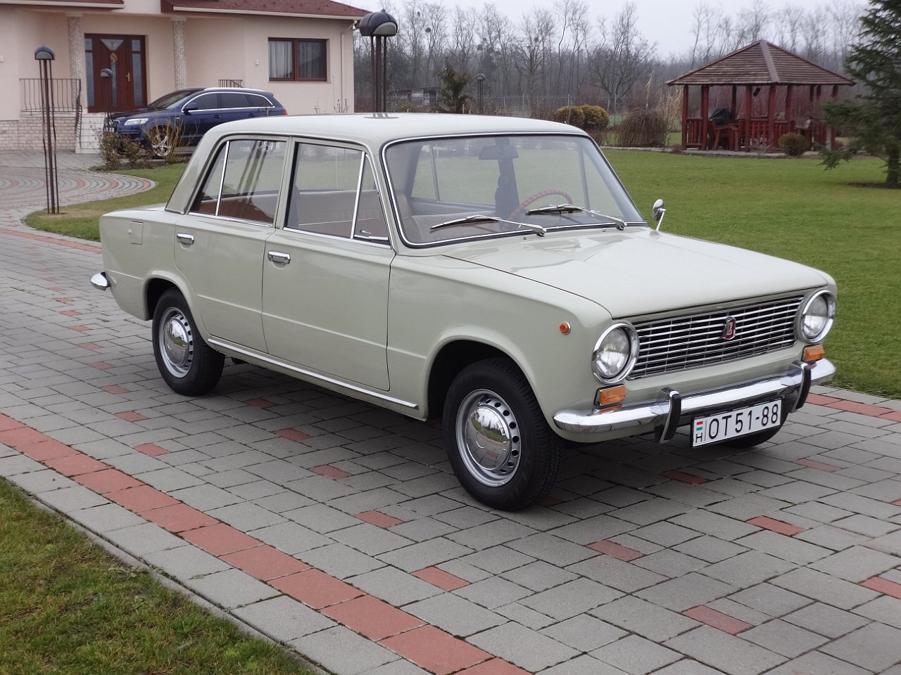
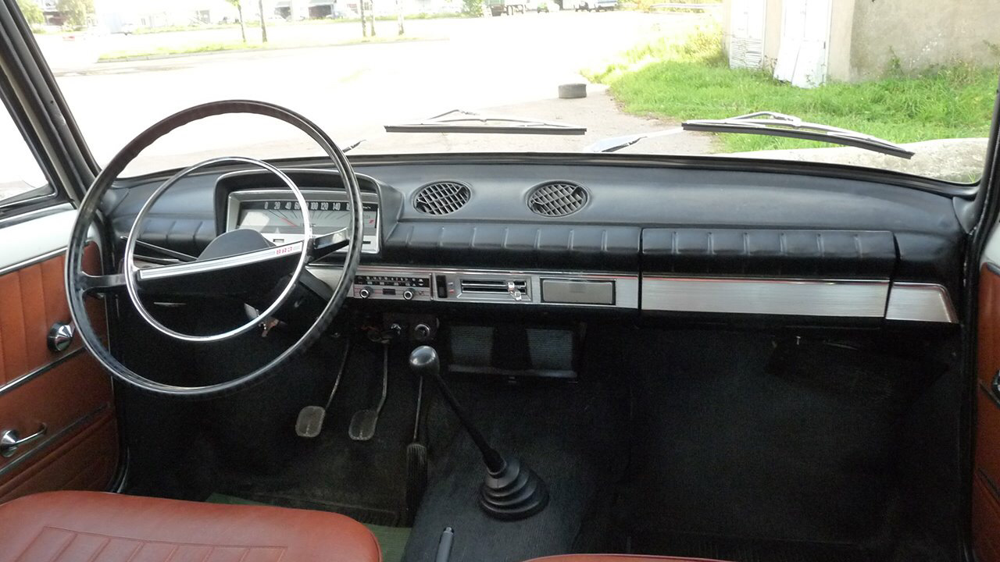
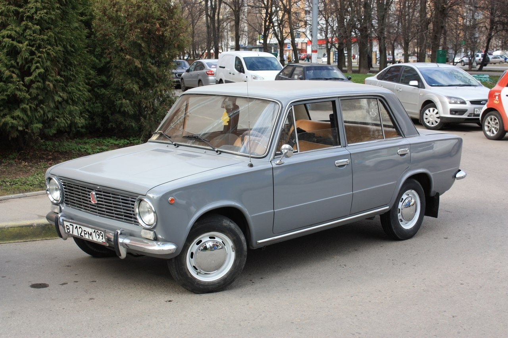
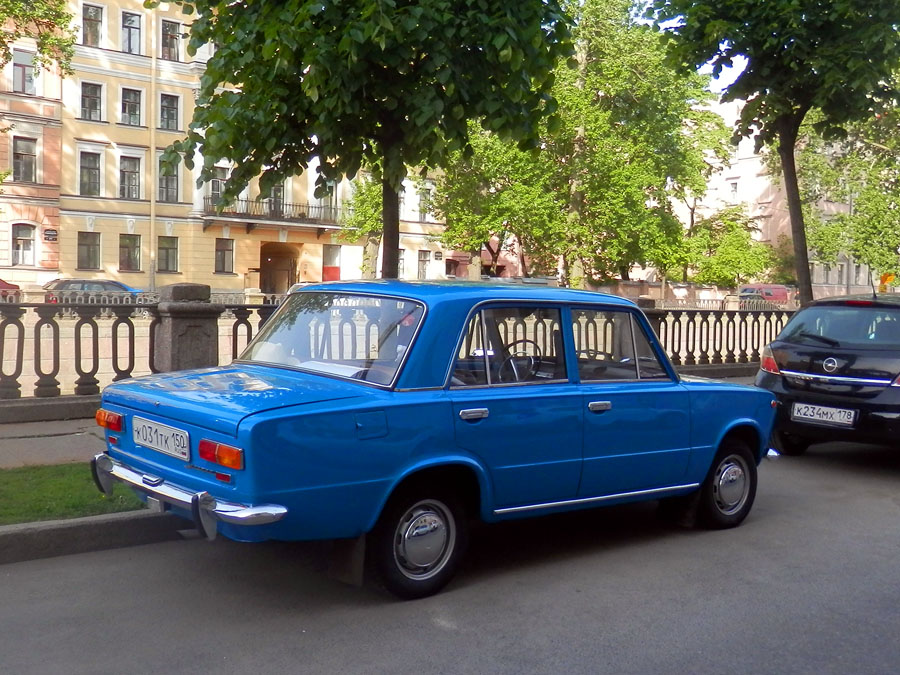
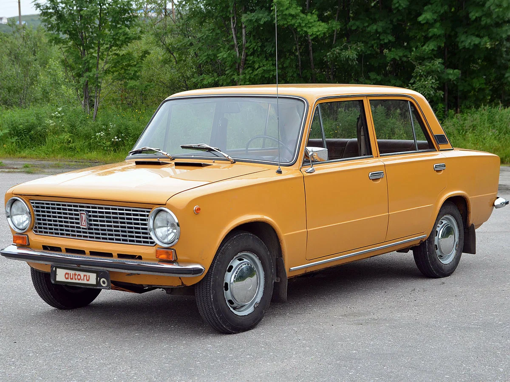
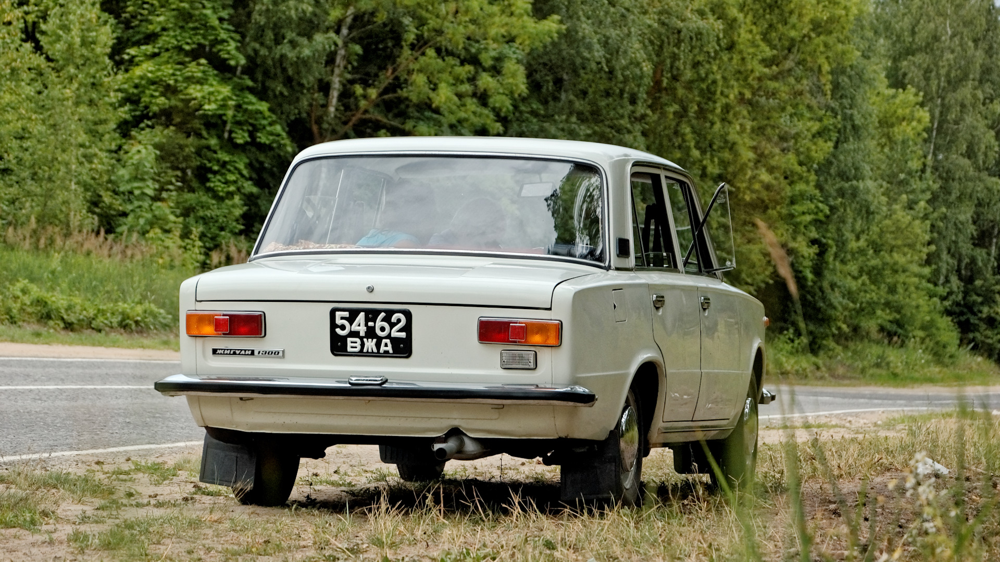

ВАЗ-2101 «Жигули» — советский заднеприводный легковой автомобиль малого класса с кузовом типа седан. Первая модель, выпущенная Волжским автомобильным заводом. На базе ВАЗ-2101 было создано так называемое «классическое» семейство автомобилей ВАЗ, которое находилось на конвейере до 17 сентября 2012 года.
За выпуск данной модели в мае 1972 года Волжскому автомобильному заводу была вручена международная премия «Золотой Меркурий».
В 2000 году ВАЗ-2101 был назван лучшим отечественным автомобилем XX века по результатам всероссийского опроса, проведённого журналом «За рулём».
За время производства, с 19 апреля 1970 года по 1988 год было выпущено 4 846 900 автомобилей ВАЗ-2101 всех модификаций.
Название «Жигули», предложенное конструктором А. М. Чёрным, было утверждено директором Волжского автозавода В. Н. Поляковым ещё в начале 1967 года. Оно берёт начало от названия местности Жигулёвские горы — возвышенности на правом берегу Волги, расположенной напротив города Тольятти, в котором и производился автомобиль.
В народе к ВАЗ-2101 в разное время «приклеились» два прозвища: сначала — «единичка», «ноль первая», «жигулёнок», а уже в конце 1980-х годов, когда модель перестала считаться престижной — «копейка»
История создания
16 августа 1966 года в Москве было подписано генеральное соглашение между итальянской компанией Fiat и Внешторгом о научно-техническом сотрудничестве в области разработки легковых автомобилей. В его рамках был утверждён проект строительства автозавода на территории СССР. Этим соглашением определялись и сами модели: два автомобиля в комплектации «норма» с кузовами седан (ВАЗ-2101) и универсал (ВАЗ-2102), и автомобиль «люкс» (ВАЗ-2103). В качестве прототипа для «нормы» сразу был определён Fiat 124, получивший в 1967 году награду «Европейский автомобиль года».
Летом 1966 года проходило знакомство советских специалистов с итальянским автомобилем. В ходе испытаний на Дмитровском автополигоне у автомобилей Fiat 124 выявились серьёзные проблемы с долговечностью кузова и задних дисковых тормозов. Маленький дорожный просвет и отсутствие буксирных проушин делали проблематичной эксплуатацию машин на пересечённой местности. Недовольство советских инженеров вызывал также нижневальный двигатель — бесперспективный с точки зрения дальнейшего развития конструкции. Все замечания советских специалистов были учтены итальянскими конструкторами.
Не менее серьёзным изменениям подверглась ходовая часть и трансмиссия. В итоге ВАЗ-2101 стал отличаться от Fiat 124 тормозами (сзади появились барабанные механизмы), подвеской (передняя подверглась усилению, задняя — полной замене на более современную с пятью реактивными штангами вместо реактивной трубы), карданной передачей (внедрён открытый вал с промежуточной опорой), усиленным сцеплением и доработанной конструкцией синхронизаторов в КПП.
Интересно, что некоторые нововведения были применены в ВАЗ-2101 в целях унификации с люксовой моделью Fiat 124S (ВАЗ-2103). В первую очередь, это травмобезопасные наружные ручки дверей. Также ВАЗ-2101 получил наружное зеркало заднего вида. В общей сложности в конструкцию Fiat 124 было внесено свыше 800 изменений, после чего он получил наименование Fiat 124R.
Производство
Первые шесть автомобилей ВАЗ-2101 были собраны 19 апреля 1970 года, постоянная работа главного конвейера началась в августе. До конца года в Тольятти собрали 21 530 машин, в 1971 году это количество возросло до 172 175 автомобилей, а пик выпуска ВАЗ-2101 пришёлся на 1973 год, когда было собрано 379 007 экземпляров. На проектную мощность завод вышел в 1974 году.
Для производства комплектующих на ВАЗ-2101 требовалось освоение в Советском Союзе новых технологических стандартов. Это касалось марок сталей, пластмасс, смазочных материалов и резины. Поэтому конструкторам разрешили работать не по советским ГОСТам, а по итальянским техническим условиям.
Поэтому на автомобилях ВАЗ-2101 «Жигули» ранних выпусков можно увидеть клейма Fiat и других иностранных фирм (Bakony, Weber, Stars, Cigala & Bertinetti и др.). Например, рычаги стеклоочистителей изначально поставляла фирма «Magneti Marelli», а замки зажигания с противоугонным устройством, радиоприёмники «Videoton RD-3602» и моторчики стеклоочистителя поставлялись из Венгрии.
Однако вскоре было налажено серийное производства многих деталей для ВАЗ-2101, зарубежные комплектующие стали замещаться советской продукцией. Производство комплектующих для ВАЗа было освоено на ДААЗ, СААЗ, ЛААЗ, Автоприбор, Автонормаль, Балаковорезинотехника и многих других производственных предприятиях.
Производство автомобилей ВАЗ-2101 (в том числе ВАЗ-21011) было прекращено в 1983 году, в связи с увеличением производства новой модели ВАЗ-2105. После этого в производстве оставалась только модификация ВАЗ-21013, производство которой завершилось в 1988 году. Всего за период 1970—1988 г.г. было выпущено 4 846 900 автомобилей ВАЗ-2101 и его модификаций.
Автомобиль ВАЗ-2101 стал родоначальником целого семейства машин, называемого «классика».
Салон

Модификации
ВАЗ-2101 «Жигули» — первоначальный вариант, двигатель 1,2 л и 59 л. с. (1970—1983);
ВАЗ-2101


ВАЗ-21011 «Жигули-1300/Lada-1300» двигатель 1,3 л и 64 л. с. (1974—1983) — так называемая «ноль одиннадцатая». Основные изменения коснулись модернизации кузова. ВАЗ-21011 оснащали иной решёткой радиатора с более частыми вертикальными прутьями (19 вместо 9 у ВАЗ-2101), в нижней части панели передка появились четыре дополнительных прямоугольных отверстия для лучшего притока воздуха к радиатору системы охлаждения. На бамперах исчезли «клыки», уступив место резиновым накладкам по периметру. На задних стойках кузова ВАЗ-21011 появились отверстия принудительной вытяжной вентиляции салона, прикрытые оригинальными решётками, подобно ВАЗ-2103. Сзади автомобиль также претерпел изменения. Отражатели переместились на ставшие плоскими задние фонари. На месте отражателей 2101 у ВАЗ-21011 появились фонарь заднего хода и шильдик «Жигули-1300» (для экспортных машин — «LADA-1300»). Салон получил более удобные по форме передние сиденья (ковшового типа), идентичные сиденьям от ВАЗ-2103, но с дерматиновой обивкой вместо комбинированной у ВАЗ-2103; руль без хромированного кольца сигнала, ножной омыватель ветрового стекла (в дальнейшем уступивший место электрическому); фон комбинации приборов стал чёрным вместо серебристого у «единички» (в дальнейшем на ВАЗ-2101 это также было внедрено). Ребристые серебристо-серые вставки на приборной панели были заменены вставками «под дерево», изменились декоративные вертикальные канавки на самой панели (с 21 мелкой до 9 крупных, с 1976 года такую панель получил и 2101). Пепельницы из задних подлокотников переместились непосредственно на панели обивки дверей. В дополнение к этому модификация получила более мощный 69-сильный двигатель рабочим объёмом 1,3 л (05.12.1974—10.1983).
ВАЗ-21013 «Жигули-1200s/Lada-1200s» — отличается от ВАЗ-21011 двигателем ВАЗ-2101 меньшей мощности (59 л. с., рабочий объём 1,2 л) (1977—1988).
ВАЗ-21011/21013

